Knee-capture revision: a short two-knee drop, the trapped leg layered between the attacker’s legs, then three wrenches on a stationary kneeling base. The legs-out seated ending is removed. This is a review preview, not a playable move. Entry still needs work: the turn and stomach roll snap into place, hands lose contact in transit, and some transition joints reach their limits. The planted capture and wrench are the revised portion to judge.
Each clip: ankle grab, step-over (the attacker's facing flips once, in a single frame), the man rolls onto his stomach (placeholder roll: a one-frame snap, no roll art), the attacker kneels bending the leg, then wrenches the foot three times with the man's fists alternating lift, strike, rest on the mat; 0.5 s hold. Normal game speed; 0.25× copies of the right-facing 4a case of each pairing (2.8 MB each, over the 1.5 MB commit limit) are local only: regenerate with toehold_t30_video.mjs. Hands ride the clip grip channel. Whole-leg layering, boot-art fit and the roll remain unapproved; there is no playable move yet (T3.2 builds it).
The stills are one-pose clips through the same runtime (tools/debug/toehold_t30_stills.mjs, poses saved in each report.json and replayed with REPLAY=1). Fist contact = the lowest drawn pixel of the hand alone (his forearm/hand pixels within 22 px of the painted palm) against the lowest row of his torso, in px; 0..4 counts as touching. Derek judges every visual.
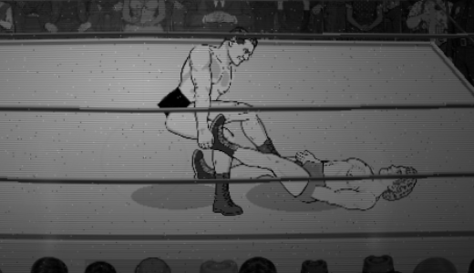 1 ankle grab |
palm to heel 0.8 px, to toe 0 px (bar 6) knee flex: attacker near 1.2 / far 1; man's trapped 0.2 (cap 2.545) near a cap: none (pinned list empty) held foot minus attacker hip y: 26.4 px (0 = hip height, + = below); attacker's body covers 0 of 798 px of the foot mat line (400): attacker knees 52 / 75.7 px above (bar -6..6), ankles 22.3 / 50.4 px above, knee above ankle 29.7 / 25.2, seat 75.2 px above layers: back to front: his free leg, his far arm, torso, head, near arm | Lou far arm, torso, head, far leg, near leg | trapped leg | Lou near arm bent boot: base shin (foot not yet bent) |
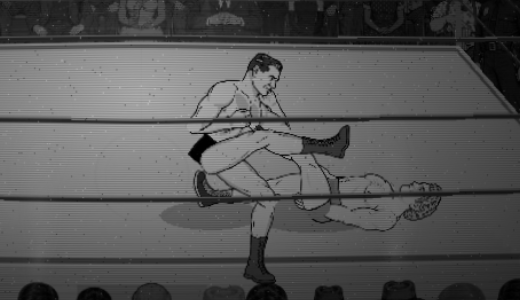 2 mid step-over |
palm to heel 0 px, to toe 0 px (bar 6) knee flex: attacker near 0.5 / far 1; man's trapped 0.5 (cap 2.545) near a cap: none (pinned list empty) held foot minus attacker hip y: -29.9 px (0 = hip height, + = below); attacker's body covers 551 of 801 px of the foot mat line (400): attacker knees 64.5 / 10.8 px above (bar -6..6), ankles 60.2 / -18.5 px above, knee above ankle 4.3 / 29.3, seat 46.7 px above layers: Lou's near leg drawn over the raised shin (his near arm and leg over the trapped leg) bent boot: base shin (foot not yet bent) |
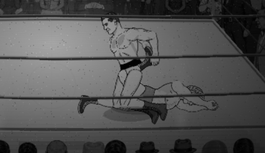 3 kneeling, leg bent |
palm to heel 0 px, to toe 0 px (bar 6); worst over the 2 s fist sell 0 / 0 knee flex: attacker near 1.75 / far 1.58; man's trapped 1.91 (cap 2.545) near a cap: none (pinned list empty) held foot minus attacker hip y: -12.8 px (0 = hip height, + = below); attacker's body covers 99 of 788 px of the foot mat line (400): attacker knees 1.8 / 3.5 px above (bar -6..6), ankles -1.8 / -3.5 px above, knee above ankle 3.6 / 7, seat 57.3 px above fists over a 2 s sell: near 2 strikes, 35 contact frames (longest run 18), highest lift -36 px, deepest 2 px | far 1 strikes, 48 contact frames (longest run 29), highest lift -36 px, deepest 2 px layers: far attacker leg behind trapped leg; near attacker leg in front; both knees remain planted through the wrench Receiver: stomach down; hip lift -110, attacker crouch 1, hip spacing 21.5 px. bent boot: George has no ankleTwist: base shin |
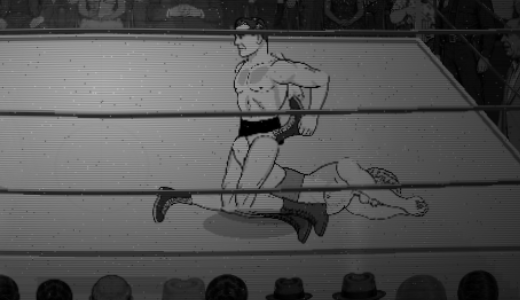 4a sit back on heels |
palm to heel 0 px, to toe 0 px (bar 6); worst over the 2 s fist sell 0 / 0 knee flex: attacker near 1.75 / far 1.58; man's trapped 2.03 (cap 2.545) near a cap: none (pinned list empty) held foot minus attacker hip y: -8.1 px (0 = hip height, + = below); attacker's body covers 144 of 783 px of the foot mat line (400): attacker knees 1.8 / 3.5 px above (bar -6..6), ankles -1.8 / -3.5 px above, knee above ankle 3.6 / 7, seat 57.3 px above fists over a 2 s sell: near 2 strikes, 35 contact frames (longest run 18), highest lift -36 px, deepest 2 px | far 1 strikes, 48 contact frames (longest run 29), highest lift -36 px, deepest 2 px layers: far attacker leg behind trapped leg; near attacker leg in front; both knees remain planted through the wrench Receiver: stomach down; hip lift -110, attacker crouch 1, hip spacing 21.5 px. bent boot: George has no ankleTwist: base shin |
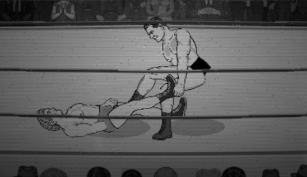 1 ankle grab |
palm to heel 0.8 px, to toe 0 px (bar 6) knee flex: attacker near 1.2 / far 1; man's trapped 0.2 (cap 2.545) near a cap: none (pinned list empty) held foot minus attacker hip y: 26.4 px (0 = hip height, + = below); attacker's body covers 0 of 783 px of the foot mat line (400): attacker knees 52 / 75.7 px above (bar -6..6), ankles 22.3 / 50.4 px above, knee above ankle 29.7 / 25.2, seat 75.2 px above layers: back to front: his free leg, his far arm, torso, head, near arm | Lou far arm, torso, head, far leg, near leg | trapped leg | Lou near arm bent boot: base shin (foot not yet bent) |
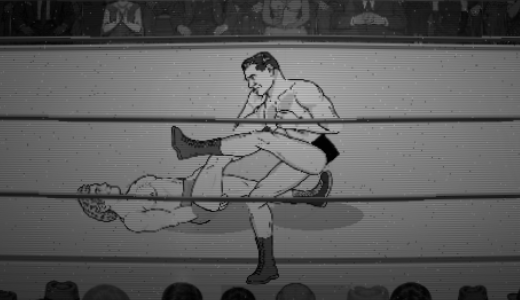 2 mid step-over |
palm to heel 0 px, to toe 0 px (bar 6) knee flex: attacker near 0.5 / far 1; man's trapped 0.5 (cap 2.545) near a cap: none (pinned list empty) held foot minus attacker hip y: -29.9 px (0 = hip height, + = below); attacker's body covers 539 of 789 px of the foot mat line (400): attacker knees 64.5 / 10.8 px above (bar -6..6), ankles 60.2 / -18.5 px above, knee above ankle 4.3 / 29.3, seat 46.7 px above layers: Lou's near leg drawn over the raised shin (his near arm and leg over the trapped leg) bent boot: base shin (foot not yet bent) |
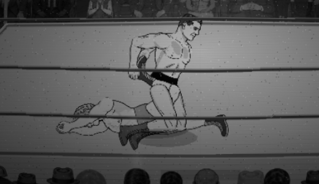 3 kneeling, leg bent |
palm to heel 0 px, to toe 0 px (bar 6); worst over the 2 s fist sell 0 / 0 knee flex: attacker near 1.75 / far 1.58; man's trapped 1.91 (cap 2.545) near a cap: none (pinned list empty) held foot minus attacker hip y: -12.8 px (0 = hip height, + = below); attacker's body covers 108 of 803 px of the foot mat line (400): attacker knees 1.8 / 3.5 px above (bar -6..6), ankles -1.8 / -3.5 px above, knee above ankle 3.6 / 7, seat 57.3 px above fists over a 2 s sell: near 2 strikes, 35 contact frames (longest run 18), highest lift -35 px, deepest 2 px | far 1 strikes, 50 contact frames (longest run 30), highest lift -36 px, deepest 2 px layers: far attacker leg behind trapped leg; near attacker leg in front; both knees remain planted through the wrench Receiver: stomach down; hip lift -110, attacker crouch 1, hip spacing 21.5 px. bent boot: George has no ankleTwist: base shin |
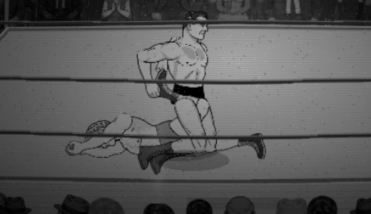 4a sit back on heels |
palm to heel 0 px, to toe 0 px (bar 6); worst over the 2 s fist sell 0 / 0 knee flex: attacker near 1.75 / far 1.58; man's trapped 2.03 (cap 2.545) near a cap: none (pinned list empty) held foot minus attacker hip y: -8.1 px (0 = hip height, + = below); attacker's body covers 155 of 797 px of the foot mat line (400): attacker knees 1.8 / 3.5 px above (bar -6..6), ankles -1.8 / -3.5 px above, knee above ankle 3.6 / 7, seat 57.3 px above fists over a 2 s sell: near 2 strikes, 35 contact frames (longest run 18), highest lift -35 px, deepest 2 px | far 1 strikes, 50 contact frames (longest run 30), highest lift -36 px, deepest 2 px layers: far attacker leg behind trapped leg; near attacker leg in front; both knees remain planted through the wrench Receiver: stomach down; hip lift -110, attacker crouch 1, hip spacing 21.5 px. bent boot: George has no ankleTwist: base shin |
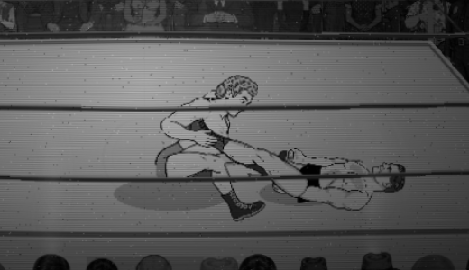 1 ankle grab |
palm to heel 0 px, to toe 0 px (bar 6) knee flex: attacker near 1.2 / far 1; man's trapped 0.2 (cap 2.545) near a cap: none (pinned list empty) held foot minus attacker hip y: -23.5 px (0 = hip height, + = below); attacker's body covers 0 of 866 px of the foot mat line (400): attacker knees 27.8 / 45.5 px above (bar -6..6), ankles -10.2 / 24.9 px above, knee above ankle 38 / 20.5, seat 23.4 px above layers: back to front: his free leg, his far arm, torso, head, near arm | Lou far arm, torso, head, far leg, near leg | trapped leg | Lou near arm bent boot: base shin (foot not yet bent) |
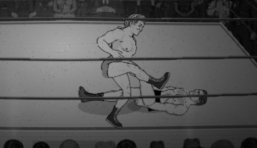 2 mid step-over |
palm to heel 0 px, to toe 0 px (bar 6) knee flex: attacker near 0.5 / far 1; man's trapped 0.5 (cap 2.545) near a cap: none (pinned list empty) held foot minus attacker hip y: -13.7 px (0 = hip height, + = below); attacker's body covers 772 of 866 px of the foot mat line (400): attacker knees 61.2 / 19.9 px above (bar -6..6), ankles 41.2 / -17.1 px above, knee above ankle 20.1 / 37, seat 60.8 px above layers: Lou's near leg drawn over the raised shin (his near arm and leg over the trapped leg) bent boot: base shin (foot not yet bent) |
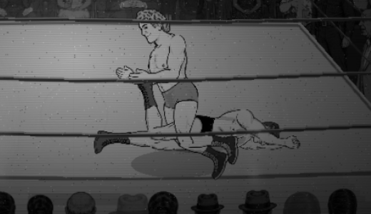 3 kneeling, leg bent |
palm to heel 0 px, to toe 0 px (bar 6); worst over the 2 s fist sell 0 / 0 knee flex: attacker near 1.51 / far 0.88; man's trapped 1.49 (cap 2.545) near a cap: none (pinned list empty) held foot minus attacker hip y: 8.7 px (0 = hip height, + = below); attacker's body covers 0 of 864 px of the foot mat line (400): attacker knees 1.6 / 2.7 px above (bar -6..6), ankles -1 / -18.1 px above, knee above ankle 2.6 / 20.9, seat 50.7 px above fists over a 2 s sell: near 2 strikes, 35 contact frames (longest run 18), highest lift -35 px, deepest 2 px | far 1 strikes, 47 contact frames (longest run 29), highest lift -35 px, deepest 2 px layers: far attacker leg behind trapped leg; near attacker leg in front; both knees remain planted through the wrench Receiver: stomach down; hip lift -110, attacker crouch 0.5, hip spacing 26.1 px. bent boot: Lou's ankleTwist worn; drawn for a shin hanging straight down, here the shin is folded back (judge the fit) |
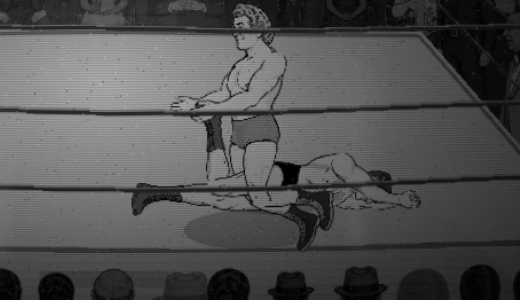 4a sit back on heels |
palm to heel 0 px, to toe 0 px (bar 6); worst over the 2 s fist sell 0 / 0 knee flex: attacker near 1.51 / far 0.88; man's trapped 1.61 (cap 2.545) near a cap: none (pinned list empty) held foot minus attacker hip y: 8.2 px (0 = hip height, + = below); attacker's body covers 0 of 879 px of the foot mat line (400): attacker knees 1.6 / 2.7 px above (bar -6..6), ankles -1 / -18.1 px above, knee above ankle 2.6 / 20.9, seat 50.7 px above fists over a 2 s sell: near 2 strikes, 35 contact frames (longest run 18), highest lift -35 px, deepest 2 px | far 1 strikes, 47 contact frames (longest run 29), highest lift -35 px, deepest 2 px layers: far attacker leg behind trapped leg; near attacker leg in front; both knees remain planted through the wrench Receiver: stomach down; hip lift -110, attacker crouch 0.5, hip spacing 26.1 px. bent boot: Lou's ankleTwist worn; drawn for a shin hanging straight down, here the shin is folded back (judge the fit) |
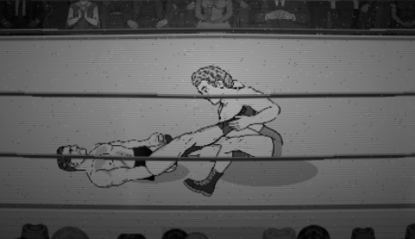 1 ankle grab |
palm to heel 0 px, to toe 0 px (bar 6) knee flex: attacker near 1.2 / far 1; man's trapped 0.2 (cap 2.545) near a cap: none (pinned list empty) held foot minus attacker hip y: -23.5 px (0 = hip height, + = below); attacker's body covers 0 of 866 px of the foot mat line (400): attacker knees 27.8 / 45.5 px above (bar -6..6), ankles -10.2 / 24.9 px above, knee above ankle 38 / 20.5, seat 23.4 px above layers: back to front: his free leg, his far arm, torso, head, near arm | Lou far arm, torso, head, far leg, near leg | trapped leg | Lou near arm bent boot: base shin (foot not yet bent) |
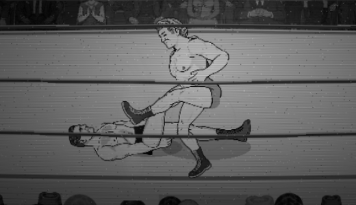 2 mid step-over |
palm to heel 0 px, to toe 0 px (bar 6) knee flex: attacker near 0.5 / far 1; man's trapped 0.5 (cap 2.545) near a cap: none (pinned list empty) held foot minus attacker hip y: -13.7 px (0 = hip height, + = below); attacker's body covers 773 of 867 px of the foot mat line (400): attacker knees 61.2 / 19.9 px above (bar -6..6), ankles 41.2 / -17.1 px above, knee above ankle 20.1 / 37, seat 60.8 px above layers: Lou's near leg drawn over the raised shin (his near arm and leg over the trapped leg) bent boot: base shin (foot not yet bent) |
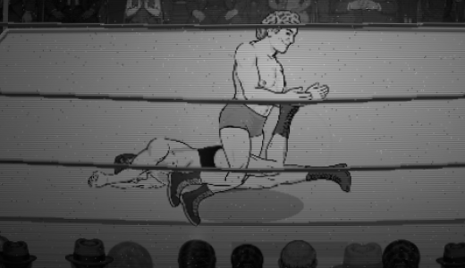 3 kneeling, leg bent |
palm to heel 0 px, to toe 0 px (bar 6); worst over the 2 s fist sell 0 / 0 knee flex: attacker near 1.51 / far 0.88; man's trapped 1.49 (cap 2.545) near a cap: none (pinned list empty) held foot minus attacker hip y: 8.7 px (0 = hip height, + = below); attacker's body covers 0 of 863 px of the foot mat line (400): attacker knees 1.6 / 2.7 px above (bar -6..6), ankles -1 / -18.1 px above, knee above ankle 2.6 / 20.9, seat 50.7 px above fists over a 2 s sell: near 2 strikes, 35 contact frames (longest run 18), highest lift -35 px, deepest 2 px | far 1 strikes, 47 contact frames (longest run 29), highest lift -35 px, deepest 2 px layers: far attacker leg behind trapped leg; near attacker leg in front; both knees remain planted through the wrench Receiver: stomach down; hip lift -110, attacker crouch 0.5, hip spacing 26.1 px. bent boot: Lou's ankleTwist worn; drawn for a shin hanging straight down, here the shin is folded back (judge the fit) |
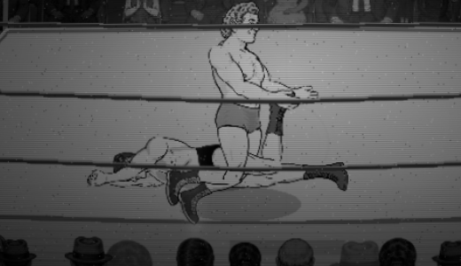 4a sit back on heels |
palm to heel 0 px, to toe 0 px (bar 6); worst over the 2 s fist sell 0 / 0 knee flex: attacker near 1.51 / far 0.88; man's trapped 1.61 (cap 2.545) near a cap: none (pinned list empty) held foot minus attacker hip y: 8.2 px (0 = hip height, + = below); attacker's body covers 0 of 878 px of the foot mat line (400): attacker knees 1.6 / 2.7 px above (bar -6..6), ankles -1 / -18.1 px above, knee above ankle 2.6 / 20.9, seat 50.7 px above fists over a 2 s sell: near 2 strikes, 35 contact frames (longest run 18), highest lift -35 px, deepest 2 px | far 1 strikes, 47 contact frames (longest run 29), highest lift -35 px, deepest 2 px layers: far attacker leg behind trapped leg; near attacker leg in front; both knees remain planted through the wrench Receiver: stomach down; hip lift -110, attacker crouch 0.5, hip spacing 26.1 px. bent boot: Lou's ankleTwist worn; drawn for a shin hanging straight down, here the shin is folded back (judge the fit) |